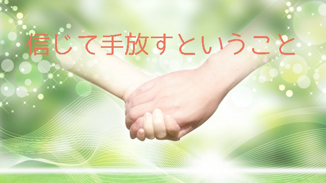

子育てにとって何が大切ですかと聞かれるたびに私は「信じて手放すことです」と答えているが、それがなかなかできないという人が多い。
それは多分「信じる」ことと「手放す」ことの意味を難しく考えているからだと思う。
確かに私たちはだれかを信じると言うとき、その人を信じたい反面、心の片隅にわずかながら疑いの念が兆していることがある。たとえば部下などに仕事を任せるとき「多分あいつならうまくやってくれるだろうが…万一ダメだったときはどうするかな」など多少の疑念は残る。むしろ万一のときのことを考えて次善策を考えておくほうが良い上司といえるかも知れない。
その上で「俺はあいつを信じている」と言うなら、それは自分に「大丈夫だ」と言い聞かせているか、あるいは直接本人に「お前を信じている」と言うことで励ましのメッセージを送っているといえる。
恋人同士でも女性が「私は彼を信じています」と言う場合、心底信じているというより色々不安(疑念)を抱えながらもあえて「彼を信じたい」というのが本当はないか。
ひいきのチームが勝つことを信じる。取り引き先が契約（約束）を履行するのを信じる。息子（娘）の合格を信じる。
そんなとき私たちの気持ちは「信じている」というより「信じたい」ではないだろうか。100％の信頼ではないということだ。
つまり私たちが「信じる」という言葉を使うとき「信じたい」願望と「信じ切れない」疑念の両方が入り混った心理状態にあるということ。
本当に「信じる」ときこのような葛藤は生じない。たとえばあなたが女性だとして、あなたは日頃「自分は女だと信じている」などと言い聞かせたりするだろうか。日本人であるあなたが「自分は日本人と信じる」などと言うだろうか。当たり前すぎて疑問にさえ感じないのではないだろうか。
だから真に我が子を信じると言うなら、そこには疑いの雲が一片も浮かばない晴天の青空のごとき晴れやかな心境でなくてはならない。
そこでは「信じる」という言葉さえ必要としない。強いて言うなら安心であり子どもがいてくれる喜びであり楽しみしかない心の状態である。
子どもを狭い枠に閉じ込めない
我が子を見ているとそんな安心とか喜びばかり感じていられない。
多くの親はそう思うだろうが、それは子どもを狭い枠の中で見ているからだ。成績や能力の有無を他者と比較して「ここが劣っている」とか「このままでは将来困るのでは」と徒らに不安がっている。常識（世間的基準）の枠に、縛られている。
いま現状の成績とか能力などは長い成長過程での一つの断面でしかない。子どもの全体像という大きな視野でとらえたときのわずかな側面でしかない。
それでも子どもが心配―信じ切れないーという親は次のことを思い出して欲しい。
たとえばあなたが母親なら子どもが産まれた日のことを憶えているだろう。お産の苦しみから解放され初めて我が子を腕に抱いたときの感触。五体満足で生まれてきた我が子に安堵と喜び、そして感謝があふれ出た瞬間。あなたと子供は愛と祝福に包まれていた。そこには紛れもなく無条件の愛があった。
その後幼稚園くらいまでは、色々苦労もあったはいえ「このまま健康で伸び伸び育ってくれるなら」という思いでいたはずだ。決して他人と比べたり、いちいちウチの子は〇〇が劣っているなどと優劣を競ったりはしなかったのではないか。
ひたすら「子どもがいてくれる喜び」と「スクスク成長する我が子への安心」があったのではないだろうか。
それなのにいつの間にか世間の押しつける物差しー成績や能力への期待などーで我が子を測るようになってしまった。その狭い枠の中で子どもを評価し、その基準に満たないー不足しているーことを根拠に子どもを信頼し切れなくなっている。
つまり子どもが変わったというより子どもの成長に伴い親の見方が変わったのだ。いつの間にか条件つきの愛、条件つきの信頼へと変わってしまった。
本来の「子どものありのまま」を受容する純粋な信頼、根拠なく信じ愛する姿勢を忘れてしまったのだ。
だからもういちど思い出せばいい。子どもが産まれた日から幼児期そして現在に至るまでの子どもの様子、親子間での様々なエピソードさらには将来の姿までもイメージしてみよう。
子どもの全体像が見えてくるのではないだろうか。
「我が子は大丈夫だ」という安心感のようなものが芽生える。それこそが本当の意味での信頼―我が子を信じている状態―である。
親が執着を手放すとき
子どもに限らず人を信じるとは、このように信じるという言葉さえ浮かばない心の状態、ただ安心し互いの関係にくつろいでいる様子を指す。相手の「ありのまま」を許容している姿勢だ。それは相手を狭い枠に閉じこめずトータルな存在として認めることで可能となる。
そしてそのあり方こそが「信じて手放す」の本当の意味となる。
この場合の「手放す」とは相手を突き放すとか勝手気ままにさせることではない。相手に対する期待や不安、心配を手放すことであり、「こうすべき」「こうしてもらわないと困る」という狭い視点からのコントロール欲求を手放すことである。
特に親は子どもが思春期頃になると、知らず知らずのうちに多くの要求を課してしまいがちだ。「もう少し勉強などで努力して欲しい」「もっと自主的に行動すべきなのに」「せめて〇〇校くらいには合格して欲しい」等々。
これは実は親が子どもを「思い通りにしよう」と自らのコントロール欲求に執着していることに他ならず、子どもはますます反対方向へ駆け出すだろう。親はそこに気づいて「執着」を手放さなければならない。いま見えている欠点や心配な態度はトータルに見て必ずしも問題とは限らない。それは子どもが人生の過程で乗り超えるべき課題であって親が先回りして解決してやる性質のものではないのだ。
「後で振り返ればあんな失敗があったからこそ今の自分がある」そんな経験は誰にでもある。子どもには子どもの「人生の課題」があるのだ。だから親は「子どももいま色々学んでいるのだな」と少し距離を置いて眺めること。「今のうちにどうにかしないと大変だ」というコントロールへの執着を手放し大らかに見て欲しい。もちろん目に余るなら注意したり叱っても良い。親としての「これだけは守って欲しい」というギリギリの線を示すことは構わない。
しかし世間体や常識という外側からの価値判断に拘り、その枠にはめこむことが正しいとコントロールすることは望ましくない。それは子どもが本来もつ豊かな可能性を奪うことになりかねないからだ。
このように「心配や不安」あるいは「期待」という形で子どもに執着していることに気づき、それを手放すとき初めて子どもは自らの意思で正しく人生を歩み出す。
親はたとえまどろっこしく感じても、苦しく感じても子どもの人生そのものを信頼し「発展途上」の子どもの今を祝福して欲しい。
我が子を初めて抱いたとき、危なっかしくヨチヨチ歩く後ろ姿を微笑んで眺めていたとき、幼稚園の駆けっこで元気よく走っていたとき親であるあなたは何を感じていただろう。
誇らしいような嬉しいような気持ち。これからの成長を祝福する感じ。そんな至福の状態ではなかったろうか。
そのことを思い出すときあなたは子どもを信じて手放している。